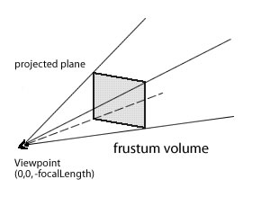

| Language Version: | ActionScript 3.0 |
| Runtime Versions: | Flash Player 10, AIR 1.5 |
The PerspectiveProjection class provides an easy way to assign or modify the perspective
transformations of a display object and all of its children. For more complex or
custom perspective transformations, use the Matrix3D class. While the PerspectiveProjection
class provides basic three-dimensional presentation properties, the Matrix3D class
provides more detailed control over the three-dimensional presentation of display objects.
Projection is a way of representing a three-dimensional object in a
two-dimensional space, like a cube projected onto a computer screen. Perspective projection uses a viewing
frustum (a rectangular pyramid) to model and project a three-dimensional world and its objects
on the screen. The viewing frustum becomes increasingly wider as it moves further from the origin
of the viewpoint. The origin of the viewpoint could be a camera or the eyes of an observer facing the screen.
The projected perspective produces the illusion of three dimensions with depth and distance,
where the objects closer to the screen appear larger than the objects farther from the screen.

A default PerspectiveProjection object is a framework defined for perspective transformation
of the root object, based on the field of view and aspect ratio (dimensions) of the stage.
The projection center, the vanishing point, is set to the center of the stage, which means the
three-dimensional display objects disappear toward the center of the stage as they move
back in the z axis. The default viewpoint is at point (0,0) looking down the positive
z axis. The y-axis points down toward the bottom of the screen. You can
gain access to the root display object's perspective projection settings
and change the field of view and projection center properties of the perspectiveProjection
property through the root object's DisplayObject.transform property.
You can also set a different perspective projection setting for a display object through
the parent's perspective projection. First, create a PerspectiveProjection object and set
its fieldOfView and projectionCenter properties. Next, assign the
PerspectiveProjection object to the parent display object using
the DisplayObject.transform property. The specified projection matrix and transformation
will then apply to all the display object's three-dimensional children.
fieldOfView:Number| Language Version: | ActionScript 3.0 |
| Runtime Versions: | Flash Player 10, AIR 1.5 |
Specifies an angle, as a degree between 0 and 180, for the field of view in three
dimensions. This value determines how strong the perspective transformation and distortion apply to
a three-dimensional display object with a non-zero z-coordinate.
A degree close to 0 means that the screen's two-dimensional x- and y-coordinates are
roughly the same as the three-dimensional x-, y-, and z-coordinates with little or
no distortion. In other words, for a small angle, a display object moving down the z axis appears
to stay near the same size and moves little.
A value close to 180 degrees results in a fisheye lens effect: positions
with a z value smaller than 0 are magnified, while positions with a
z value larger than 0 are minimized. With a large angle, a display object
moving down the z axis appears to change size quickly and moves a great distance. If the field of view
is set to 0 or 180, nothing is seen on the screen.
Implementation public function get fieldOfView():Number public function set fieldOfView(value:Number):voidfocalLength:Number| Language Version: | ActionScript 3.0 |
| Runtime Versions: | Flash Player 10, AIR 1.5 |
The distance between the eye or the viewpoint's origin (0,0,0) and the display object located
in the z axis. During the perspective transformation, the focalLength is calculated dynamically
using the angle of the field of view and the stage's aspect ratio (stage width divided by
stage height).
Implementation public function get focalLength():Number public function set focalLength(value:Number):voidSee also
projectionCenter:Point| Language Version: | ActionScript 3.0 |
| Runtime Versions: | Flash Player 10, AIR 1.5 |
A two-dimensional point representing the center of the projection, the vanishing point for the display object.
The projectionCenter property is an offset to the default registration point that is the
upper left of the stage, point (0,0). The default projection transformation center is in the middle of
the stage, which means the three-dimensional display objects disappear toward the center of the stage
as they move backwards in the z axis.
Implementation public function get projectionCenter():Point public function set projectionCenter(value:Point):voidpublic function PerspectiveProjection()| Language Version: | ActionScript 3.0 |
| Runtime Versions: | Flash Player 10, AIR 1.5 |
Creates an instance of a PerspectiveProjection object.
public function toMatrix3D():Matrix3D| Language Version: | ActionScript 3.0 |
| Runtime Versions: | Flash Player 10, AIR 1.5 |
Returns the underlying Matrix3D object of the display object.
A display object, like the root object, can have a PerspectiveProjection object without
needing a Matrix3D property defined for its transformations. In fact, use either
a PerspectiveProjection or a Matrix3D object to specify the perspective transformation.
If when using the PerspectiveProjection object, a Matrix3D object was needed, the toMatrix3D()
method can retrieve the underlying Matrix3D object of the display object. For example, the
toMatrix3D() method can be used with the Utils3D.projectVectors()
method.
Returns | Matrix3D — The underlying Matrix3D object.
|
See also
© 2009 Adobe Systems Incorporated. All rights reserved.
Thu Feb 19 2009, 09:49 AM -08:00 PerspectiveProjection PerspectiveProjection PerspectiveProjection PerspectiveProjection PerspectiveProjection PerspectiveProjection PerspectiveProjection PerspectiveProjection PerspectiveProjection PerspectiveProjection PerspectiveProjection PerspectiveProjection PerspectiveProjection PerspectiveProjection PerspectiveProjection PerspectiveProjection PerspectiveProjection PerspectiveProjection PerspectiveProjection PerspectiveProjection PerspectiveProjection PerspectiveProjection PerspectiveProjection PerspectiveProjection PerspectiveProjection PerspectiveProjection PerspectiveProjection PerspectiveProjection PerspectiveProjection PerspectiveProjection PerspectiveProjection PerspectiveProjection PerspectiveProjection PerspectiveProjection PerspectiveProjection PerspectiveProjection PerspectiveProjection PerspectiveProjection PerspectiveProjection PerspectiveProjection PerspectiveProjection PerspectiveProjection PerspectiveProjection PerspectiveProjection PerspectiveProjection PerspectiveProjection PerspectiveProjection PerspectiveProjection PerspectiveProjection PerspectiveProjection PerspectiveProjection PerspectiveProjection PerspectiveProjection PerspectiveProjection PerspectiveProjection PerspectiveProjection PerspectiveProjection PerspectiveProjection PerspectiveProjection PerspectiveProjection PerspectiveProjection PerspectiveProjection PerspectiveProjection PerspectiveProjection PerspectiveProjection PerspectiveProjection PerspectiveProjection PerspectiveProjection PerspectiveProjection PerspectiveProjection PerspectiveProjection PerspectiveProjection PerspectiveProjection PerspectiveProjection PerspectiveProjection PerspectiveProjection PerspectiveProjection PerspectiveProjection PerspectiveProjection PerspectiveProjection PerspectiveProjection PerspectiveProjection PerspectiveProjection PerspectiveProjection PerspectiveProjection PerspectiveProjection PerspectiveProjection PerspectiveProjection PerspectiveProjection PerspectiveProjection PerspectiveProjection PerspectiveProjection PerspectiveProjection PerspectiveProjection PerspectiveProjection PerspectiveProjection PerspectiveProjection PerspectiveProjection PerspectiveProjection PerspectiveProjection PerspectiveProjection PerspectiveProjection PerspectiveProjection PerspectiveProjection PerspectiveProjection PerspectiveProjection PerspectiveProjection PerspectiveProjection PerspectiveProjection PerspectiveProjection PerspectiveProjection PerspectiveProjection PerspectiveProjection PerspectiveProjection PerspectiveProjection PerspectiveProjection PerspectiveProjection PerspectiveProjection PerspectiveProjection PerspectiveProjection PerspectiveProjection PerspectiveProjection PerspectiveProjection PerspectiveProjection PerspectiveProjection PerspectiveProjection PerspectiveProjection PerspectiveProjection PerspectiveProjection PerspectiveProjection PerspectiveProjection PerspectiveProjection PerspectiveProjection PerspectiveProjection PerspectiveProjection PerspectiveProjection PerspectiveProjection PerspectiveProjection PerspectiveProjection PerspectiveProjection PerspectiveProjection PerspectiveProjection PerspectiveProjection PerspectiveProjection PerspectiveProjection PerspectiveProjection PerspectiveProjection PerspectiveProjection PerspectiveProjection PerspectiveProjection PerspectiveProjection PerspectiveProjection PerspectiveProjection PerspectiveProjection PerspectiveProjection PerspectiveProjection PerspectiveProjection PerspectiveProjection PerspectiveProjection PerspectiveProjection PerspectiveProjection PerspectiveProjection PerspectiveProjection PerspectiveProjection PerspectiveProjection PerspectiveProjection PerspectiveProjection PerspectiveProjection PerspectiveProjection PerspectiveProjection PerspectiveProjection PerspectiveProjection PerspectiveProjection PerspectiveProjection PerspectiveProjection PerspectiveProjection PerspectiveProjection PerspectiveProjection PerspectiveProjection PerspectiveProjection PerspectiveProjection PerspectiveProjection PerspectiveProjection PerspectiveProjection PerspectiveProjection PerspectiveProjection PerspectiveProjection PerspectiveProjection PerspectiveProjection PerspectiveProjection PerspectiveProjection PerspectiveProjection PerspectiveProjection PerspectiveProjection PerspectiveProjection PerspectiveProjection PerspectiveProjection PerspectiveProjection PerspectiveProjection PerspectiveProjection PerspectiveProjection PerspectiveProjection PerspectiveProjection PerspectiveProjection PerspectiveProjection PerspectiveProjection PerspectiveProjection PerspectiveProjection PerspectiveProjection PerspectiveProjection PerspectiveProjection PerspectiveProjection PerspectiveProjection PerspectiveProjection PerspectiveProjection PerspectiveProjection PerspectiveProjection PerspectiveProjection PerspectiveProjection PerspectiveProjection PerspectiveProjection PerspectiveProjection PerspectiveProjection PerspectiveProjection PerspectiveProjection PerspectiveProjection PerspectiveProjection PerspectiveProjection PerspectiveProjection PerspectiveProjection PerspectiveProjection PerspectiveProjection PerspectiveProjection PerspectiveProjection PerspectiveProjection PerspectiveProjection PerspectiveProjection PerspectiveProjection PerspectiveProjection PerspectiveProjection PerspectiveProjection PerspectiveProjection PerspectiveProjection PerspectiveProjection PerspectiveProjection PerspectiveProjection PerspectiveProjection PerspectiveProjection PerspectiveProjection PerspectiveProjection PerspectiveProjection PerspectiveProjection PerspectiveProjection PerspectiveProjection PerspectiveProjection PerspectiveProjection PerspectiveProjection PerspectiveProjection PerspectiveProjection PerspectiveProjection PerspectiveProjection PerspectiveProjection PerspectiveProjection PerspectiveProjection PerspectiveProjection PerspectiveProjection PerspectiveProjection PerspectiveProjection PerspectiveProjection PerspectiveProjection PerspectiveProjection PerspectiveProjection PerspectiveProjection PerspectiveProjection PerspectiveProjection PerspectiveProjection PerspectiveProjection PerspectiveProjection PerspectiveProjection PerspectiveProjection PerspectiveProjection PerspectiveProjection PerspectiveProjection PerspectiveProjection PerspectiveProjection PerspectiveProjection PerspectiveProjection PerspectiveProjection PerspectiveProjection PerspectiveProjection PerspectiveProjection PerspectiveProjection PerspectiveProjection PerspectiveProjection PerspectiveProjection PerspectiveProjection PerspectiveProjection PerspectiveProjection PerspectiveProjection PerspectiveProjection PerspectiveProjection PerspectiveProjection PerspectiveProjection PerspectiveProjection PerspectiveProjection PerspectiveProjection PerspectiveProjection PerspectiveProjection PerspectiveProjection PerspectiveProjection PerspectiveProjection PerspectiveProjection PerspectiveProjection PerspectiveProjection PerspectiveProjection PerspectiveProjection PerspectiveProjection PerspectiveProjection PerspectiveProjection PerspectiveProjection PerspectiveProjection PerspectiveProjection PerspectiveProjection PerspectiveProjection PerspectiveProjection PerspectiveProjection PerspectiveProjection PerspectiveProjection PerspectiveProjection PerspectiveProjection PerspectiveProjection PerspectiveProjection PerspectiveProjection PerspectiveProjection PerspectiveProjection PerspectiveProjection PerspectiveProjection PerspectiveProjection PerspectiveProjection PerspectiveProjection PerspectiveProjection PerspectiveProjection PerspectiveProjection PerspectiveProjection PerspectiveProjection PerspectiveProjection PerspectiveProjection PerspectiveProjection PerspectiveProjection PerspectiveProjection PerspectiveProjection PerspectiveProjection PerspectiveProjection PerspectiveProjection PerspectiveProjection PerspectiveProjection PerspectiveProjection PerspectiveProjection PerspectiveProjection PerspectiveProjection PerspectiveProjection PerspectiveProjection PerspectiveProjection PerspectiveProjection PerspectiveProjection PerspectiveProjection PerspectiveProjection PerspectiveProjection PerspectiveProjection PerspectiveProjection PerspectiveProjection PerspectiveProjection PerspectiveProjection PerspectiveProjection PerspectiveProjection PerspectiveProjection PerspectiveProjection PerspectiveProjection PerspectiveProjection PerspectiveProjection PerspectiveProjection PerspectiveProjection PerspectiveProjection PerspectiveProjection PerspectiveProjection PerspectiveProjection PerspectiveProjection PerspectiveProjection PerspectiveProjection PerspectiveProjection PerspectiveProjection PerspectiveProjection PerspectiveProjection PerspectiveProjection PerspectiveProjection PerspectiveProjection PerspectiveProjection PerspectiveProjection PerspectiveProjection PerspectiveProjection PerspectiveProjection PerspectiveProjection PerspectiveProjection PerspectiveProjection PerspectiveProjection PerspectiveProjection PerspectiveProjection PerspectiveProjection PerspectiveProjection PerspectiveProjection PerspectiveProjection PerspectiveProjection PerspectiveProjection PerspectiveProjection PerspectiveProjection PerspectiveProjection PerspectiveProjection PerspectiveProjection PerspectiveProjection PerspectiveProjection PerspectiveProjection PerspectiveProjection PerspectiveProjection PerspectiveProjection PerspectiveProjection PerspectiveProjection PerspectiveProjection PerspectiveProjection PerspectiveProjection PerspectiveProjection PerspectiveProjection PerspectiveProjection PerspectiveProjection PerspectiveProjection PerspectiveProjection PerspectiveProjection PerspectiveProjection PerspectiveProjection PerspectiveProjection PerspectiveProjection PerspectiveProjection PerspectiveProjection PerspectiveProjection PerspectiveProjection PerspectiveProjection PerspectiveProjection PerspectiveProjection PerspectiveProjection PerspectiveProjection PerspectiveProjection PerspectiveProjection PerspectiveProjection PerspectiveProjection PerspectiveProjection PerspectiveProjection PerspectiveProjection PerspectiveProjection PerspectiveProjection PerspectiveProjection PerspectiveProjection PerspectiveProjection PerspectiveProjection PerspectiveProjection PerspectiveProjection PerspectiveProjection PerspectiveProjection PerspectiveProjection PerspectiveProjection PerspectiveProjection PerspectiveProjection PerspectiveProjection PerspectiveProjection PerspectiveProjection PerspectiveProjection PerspectiveProjection PerspectiveProjection PerspectiveProjection PerspectiveProjection PerspectiveProjection PerspectiveProjection PerspectiveProjection PerspectiveProjection PerspectiveProjection PerspectiveProjection PerspectiveProjection PerspectiveProjection PerspectiveProjection PerspectiveProjection PerspectiveProjection PerspectiveProjection PerspectiveProjection PerspectiveProjection PerspectiveProjection PerspectiveProjection PerspectiveProjection PerspectiveProjection PerspectiveProjection PerspectiveProjection PerspectiveProjection PerspectiveProjection
flash.geom.PerspectiveProjection flash.geom.PerspectiveProjection flash.geom.PerspectiveProjection flash.geom.PerspectiveProjection flash.geom.PerspectiveProjection flash.geom.PerspectiveProjection flash.geom.PerspectiveProjection flash.geom.PerspectiveProjection flash.geom.PerspectiveProjection flash.geom.PerspectiveProjection flash.geom.PerspectiveProjection flash.geom.PerspectiveProjection flash.geom.PerspectiveProjection flash.geom.PerspectiveProjection flash.geom.PerspectiveProjection flash.geom.PerspectiveProjection flash.geom.PerspectiveProjection flash.geom.PerspectiveProjection flash.geom.PerspectiveProjection flash.geom.PerspectiveProjection flash.geom.PerspectiveProjection flash.geom.PerspectiveProjection flash.geom.PerspectiveProjection flash.geom.PerspectiveProjection flash.geom.PerspectiveProjection flash.geom.PerspectiveProjection flash.geom.PerspectiveProjection flash.geom.PerspectiveProjection flash.geom.PerspectiveProjection flash.geom.PerspectiveProjection flash.geom.PerspectiveProjection flash.geom.PerspectiveProjection flash.geom.PerspectiveProjection flash.geom.PerspectiveProjection flash.geom.PerspectiveProjection flash.geom.PerspectiveProjection flash.geom.PerspectiveProjection flash.geom.PerspectiveProjection flash.geom.PerspectiveProjection flash.geom.PerspectiveProjection flash.geom.PerspectiveProjection flash.geom.PerspectiveProjection flash.geom.PerspectiveProjection flash.geom.PerspectiveProjection flash.geom.PerspectiveProjection flash.geom.PerspectiveProjection flash.geom.PerspectiveProjection flash.geom.PerspectiveProjection flash.geom.PerspectiveProjection flash.geom.PerspectiveProjection flash.geom.PerspectiveProjection flash.geom.PerspectiveProjection flash.geom.PerspectiveProjection flash.geom.PerspectiveProjection flash.geom.PerspectiveProjection flash.geom.PerspectiveProjection flash.geom.PerspectiveProjection flash.geom.PerspectiveProjection flash.geom.PerspectiveProjection flash.geom.PerspectiveProjection flash.geom.PerspectiveProjection flash.geom.PerspectiveProjection flash.geom.PerspectiveProjection flash.geom.PerspectiveProjection flash.geom.PerspectiveProjection flash.geom.PerspectiveProjection flash.geom.PerspectiveProjection flash.geom.PerspectiveProjection flash.geom.PerspectiveProjection flash.geom.PerspectiveProjection flash.geom.PerspectiveProjection flash.geom.PerspectiveProjection flash.geom.PerspectiveProjection flash.geom.PerspectiveProjection flash.geom.PerspectiveProjection flash.geom.PerspectiveProjection flash.geom.PerspectiveProjection flash.geom.PerspectiveProjection flash.geom.PerspectiveProjection flash.geom.PerspectiveProjection flash.geom.PerspectiveProjection flash.geom.PerspectiveProjection flash.geom.PerspectiveProjection flash.geom.PerspectiveProjection flash.geom.PerspectiveProjection flash.geom.PerspectiveProjection flash.geom.PerspectiveProjection flash.geom.PerspectiveProjection flash.geom.PerspectiveProjection flash.geom.PerspectiveProjection flash.geom.PerspectiveProjection flash.geom.PerspectiveProjection flash.geom.PerspectiveProjection flash.geom.PerspectiveProjection flash.geom.PerspectiveProjection flash.geom.PerspectiveProjection flash.geom.PerspectiveProjection flash.geom.PerspectiveProjection flash.geom.PerspectiveProjection flash.geom.PerspectiveProjection flash.geom.PerspectiveProjection flash.geom.PerspectiveProjection flash.geom.PerspectiveProjection flash.geom.PerspectiveProjection flash.geom.PerspectiveProjection flash.geom.PerspectiveProjection flash.geom.PerspectiveProjection flash.geom.PerspectiveProjection flash.geom.PerspectiveProjection flash.geom.PerspectiveProjection flash.geom.PerspectiveProjection flash.geom.PerspectiveProjection flash.geom.PerspectiveProjection flash.geom.PerspectiveProjection flash.geom.PerspectiveProjection flash.geom.PerspectiveProjection flash.geom.PerspectiveProjection flash.geom.PerspectiveProjection flash.geom.PerspectiveProjection flash.geom.PerspectiveProjection flash.geom.PerspectiveProjection flash.geom.PerspectiveProjection flash.geom.PerspectiveProjection flash.geom.PerspectiveProjection flash.geom.PerspectiveProjection flash.geom.PerspectiveProjection flash.geom.PerspectiveProjection flash.geom.PerspectiveProjection flash.geom.PerspectiveProjection flash.geom.PerspectiveProjection flash.geom.PerspectiveProjection flash.geom.PerspectiveProjection flash.geom.PerspectiveProjection flash.geom.PerspectiveProjection flash.geom.PerspectiveProjection flash.geom.PerspectiveProjection flash.geom.PerspectiveProjection flash.geom.PerspectiveProjection flash.geom.PerspectiveProjection flash.geom.PerspectiveProjection flash.geom.PerspectiveProjection flash.geom.PerspectiveProjection flash.geom.PerspectiveProjection flash.geom.PerspectiveProjection flash.geom.PerspectiveProjection flash.geom.PerspectiveProjection flash.geom.PerspectiveProjection flash.geom.PerspectiveProjection flash.geom.PerspectiveProjection flash.geom.PerspectiveProjection flash.geom.PerspectiveProjection flash.geom.PerspectiveProjection flash.geom.PerspectiveProjection flash.geom.PerspectiveProjection flash.geom.PerspectiveProjection flash.geom.PerspectiveProjection flash.geom.PerspectiveProjection flash.geom.PerspectiveProjection flash.geom.PerspectiveProjection flash.geom.PerspectiveProjection flash.geom.PerspectiveProjection flash.geom.PerspectiveProjection flash.geom.PerspectiveProjection flash.geom.PerspectiveProjection flash.geom.PerspectiveProjection flash.geom.PerspectiveProjection flash.geom.PerspectiveProjection flash.geom.PerspectiveProjection flash.geom.PerspectiveProjection flash.geom.PerspectiveProjection flash.geom.PerspectiveProjection flash.geom.PerspectiveProjection flash.geom.PerspectiveProjection flash.geom.PerspectiveProjection flash.geom.PerspectiveProjection flash.geom.PerspectiveProjection flash.geom.PerspectiveProjection flash.geom.PerspectiveProjection flash.geom.PerspectiveProjection flash.geom.PerspectiveProjection flash.geom.PerspectiveProjection flash.geom.PerspectiveProjection flash.geom.PerspectiveProjection flash.geom.PerspectiveProjection flash.geom.PerspectiveProjection flash.geom.PerspectiveProjection flash.geom.PerspectiveProjection flash.geom.PerspectiveProjection flash.geom.PerspectiveProjection flash.geom.PerspectiveProjection flash.geom.PerspectiveProjection flash.geom.PerspectiveProjection flash.geom.PerspectiveProjection flash.geom.PerspectiveProjection flash.geom.PerspectiveProjection flash.geom.PerspectiveProjection flash.geom.PerspectiveProjection flash.geom.PerspectiveProjection flash.geom.PerspectiveProjection flash.geom.PerspectiveProjection flash.geom.PerspectiveProjection flash.geom.PerspectiveProjection flash.geom.PerspectiveProjection flash.geom.PerspectiveProjection flash.geom.PerspectiveProjection flash.geom.PerspectiveProjection flash.geom.PerspectiveProjection flash.geom.PerspectiveProjection flash.geom.PerspectiveProjection flash.geom.PerspectiveProjection flash.geom.PerspectiveProjection flash.geom.PerspectiveProjection flash.geom.PerspectiveProjection flash.geom.PerspectiveProjection flash.geom.PerspectiveProjection flash.geom.PerspectiveProjection flash.geom.PerspectiveProjection flash.geom.PerspectiveProjection flash.geom.PerspectiveProjection flash.geom.PerspectiveProjection flash.geom.PerspectiveProjection flash.geom.PerspectiveProjection flash.geom.PerspectiveProjection flash.geom.PerspectiveProjection flash.geom.PerspectiveProjection flash.geom.PerspectiveProjection flash.geom.PerspectiveProjection flash.geom.PerspectiveProjection flash.geom.PerspectiveProjection flash.geom.PerspectiveProjection flash.geom.PerspectiveProjection flash.geom.PerspectiveProjection flash.geom.PerspectiveProjection flash.geom.PerspectiveProjection flash.geom.PerspectiveProjection flash.geom.PerspectiveProjection flash.geom.PerspectiveProjection flash.geom.PerspectiveProjection flash.geom.PerspectiveProjection flash.geom.PerspectiveProjection flash.geom.PerspectiveProjection flash.geom.PerspectiveProjection flash.geom.PerspectiveProjection flash.geom.PerspectiveProjection flash.geom.PerspectiveProjection flash.geom.PerspectiveProjection flash.geom.PerspectiveProjection flash.geom.PerspectiveProjection flash.geom.PerspectiveProjection flash.geom.PerspectiveProjection flash.geom.PerspectiveProjection flash.geom.PerspectiveProjection flash.geom.PerspectiveProjection flash.geom.PerspectiveProjection flash.geom.PerspectiveProjection flash.geom.PerspectiveProjection flash.geom.PerspectiveProjection flash.geom.PerspectiveProjection flash.geom.PerspectiveProjection flash.geom.PerspectiveProjection flash.geom.PerspectiveProjection flash.geom.PerspectiveProjection flash.geom.PerspectiveProjection flash.geom.PerspectiveProjection flash.geom.PerspectiveProjection flash.geom.PerspectiveProjection flash.geom.PerspectiveProjection flash.geom.PerspectiveProjection flash.geom.PerspectiveProjection flash.geom.PerspectiveProjection flash.geom.PerspectiveProjection flash.geom.PerspectiveProjection flash.geom.PerspectiveProjection flash.geom.PerspectiveProjection flash.geom.PerspectiveProjection flash.geom.PerspectiveProjection flash.geom.PerspectiveProjection flash.geom.PerspectiveProjection flash.geom.PerspectiveProjection flash.geom.PerspectiveProjection flash.geom.PerspectiveProjection flash.geom.PerspectiveProjection flash.geom.PerspectiveProjection flash.geom.PerspectiveProjection flash.geom.PerspectiveProjection flash.geom.PerspectiveProjection flash.geom.PerspectiveProjection flash.geom.PerspectiveProjection flash.geom.PerspectiveProjection flash.geom.PerspectiveProjection flash.geom.PerspectiveProjection flash.geom.PerspectiveProjection flash.geom.PerspectiveProjection flash.geom.PerspectiveProjection flash.geom.PerspectiveProjection flash.geom.PerspectiveProjection flash.geom.PerspectiveProjection flash.geom.PerspectiveProjection flash.geom.PerspectiveProjection flash.geom.PerspectiveProjection flash.geom.PerspectiveProjection flash.geom.PerspectiveProjection flash.geom.PerspectiveProjection flash.geom.PerspectiveProjection flash.geom.PerspectiveProjection flash.geom.PerspectiveProjection flash.geom.PerspectiveProjection flash.geom.PerspectiveProjection flash.geom.PerspectiveProjection flash.geom.PerspectiveProjection flash.geom.PerspectiveProjection flash.geom.PerspectiveProjection flash.geom.PerspectiveProjection flash.geom.PerspectiveProjection flash.geom.PerspectiveProjection flash.geom.PerspectiveProjection flash.geom.PerspectiveProjection flash.geom.PerspectiveProjection flash.geom.PerspectiveProjection flash.geom.PerspectiveProjection flash.geom.PerspectiveProjection flash.geom.PerspectiveProjection flash.geom.PerspectiveProjection flash.geom.PerspectiveProjection flash.geom.PerspectiveProjection flash.geom.PerspectiveProjection flash.geom.PerspectiveProjection flash.geom.PerspectiveProjection flash.geom.PerspectiveProjection flash.geom.PerspectiveProjection flash.geom.PerspectiveProjection flash.geom.PerspectiveProjection flash.geom.PerspectiveProjection flash.geom.PerspectiveProjection flash.geom.PerspectiveProjection flash.geom.PerspectiveProjection flash.geom.PerspectiveProjection flash.geom.PerspectiveProjection flash.geom.PerspectiveProjection flash.geom.PerspectiveProjection flash.geom.PerspectiveProjection flash.geom.PerspectiveProjection flash.geom.PerspectiveProjection flash.geom.PerspectiveProjection flash.geom.PerspectiveProjection flash.geom.PerspectiveProjection flash.geom.PerspectiveProjection flash.geom.PerspectiveProjection flash.geom.PerspectiveProjection flash.geom.PerspectiveProjection flash.geom.PerspectiveProjection flash.geom.PerspectiveProjection flash.geom.PerspectiveProjection flash.geom.PerspectiveProjection flash.geom.PerspectiveProjection flash.geom.PerspectiveProjection flash.geom.PerspectiveProjection flash.geom.PerspectiveProjection flash.geom.PerspectiveProjection flash.geom.PerspectiveProjection flash.geom.PerspectiveProjection flash.geom.PerspectiveProjection flash.geom.PerspectiveProjection flash.geom.PerspectiveProjection flash.geom.PerspectiveProjection flash.geom.PerspectiveProjection flash.geom.PerspectiveProjection flash.geom.PerspectiveProjection flash.geom.PerspectiveProjection flash.geom.PerspectiveProjection flash.geom.PerspectiveProjection flash.geom.PerspectiveProjection flash.geom.PerspectiveProjection flash.geom.PerspectiveProjection flash.geom.PerspectiveProjection flash.geom.PerspectiveProjection flash.geom.PerspectiveProjection flash.geom.PerspectiveProjection flash.geom.PerspectiveProjection flash.geom.PerspectiveProjection flash.geom.PerspectiveProjection flash.geom.PerspectiveProjection flash.geom.PerspectiveProjection flash.geom.PerspectiveProjection flash.geom.PerspectiveProjection flash.geom.PerspectiveProjection flash.geom.PerspectiveProjection flash.geom.PerspectiveProjection flash.geom.PerspectiveProjection flash.geom.PerspectiveProjection flash.geom.PerspectiveProjection flash.geom.PerspectiveProjection flash.geom.PerspectiveProjection flash.geom.PerspectiveProjection flash.geom.PerspectiveProjection flash.geom.PerspectiveProjection flash.geom.PerspectiveProjection flash.geom.PerspectiveProjection flash.geom.PerspectiveProjection flash.geom.PerspectiveProjection flash.geom.PerspectiveProjection flash.geom.PerspectiveProjection flash.geom.PerspectiveProjection flash.geom.PerspectiveProjection flash.geom.PerspectiveProjection flash.geom.PerspectiveProjection flash.geom.PerspectiveProjection flash.geom.PerspectiveProjection flash.geom.PerspectiveProjection flash.geom.PerspectiveProjection flash.geom.PerspectiveProjection flash.geom.PerspectiveProjection flash.geom.PerspectiveProjection flash.geom.PerspectiveProjection flash.geom.PerspectiveProjection flash.geom.PerspectiveProjection flash.geom.PerspectiveProjection flash.geom.PerspectiveProjection flash.geom.PerspectiveProjection flash.geom.PerspectiveProjection flash.geom.PerspectiveProjection flash.geom.PerspectiveProjection flash.geom.PerspectiveProjection flash.geom.PerspectiveProjection flash.geom.PerspectiveProjection flash.geom.PerspectiveProjection flash.geom.PerspectiveProjection flash.geom.PerspectiveProjection flash.geom.PerspectiveProjection flash.geom.PerspectiveProjection flash.geom.PerspectiveProjection flash.geom.PerspectiveProjection flash.geom.PerspectiveProjection flash.geom.PerspectiveProjection flash.geom.PerspectiveProjection flash.geom.PerspectiveProjection flash.geom.PerspectiveProjection flash.geom.PerspectiveProjection flash.geom.PerspectiveProjection flash.geom.PerspectiveProjection flash.geom.PerspectiveProjection flash.geom.PerspectiveProjection flash.geom.PerspectiveProjection flash.geom.PerspectiveProjection flash.geom.PerspectiveProjection flash.geom.PerspectiveProjection flash.geom.PerspectiveProjection flash.geom.PerspectiveProjection flash.geom.PerspectiveProjection flash.geom.PerspectiveProjection flash.geom.PerspectiveProjection flash.geom.PerspectiveProjection flash.geom.PerspectiveProjection flash.geom.PerspectiveProjection flash.geom.PerspectiveProjection flash.geom.PerspectiveProjection flash.geom.PerspectiveProjection flash.geom.PerspectiveProjection flash.geom.PerspectiveProjection flash.geom.PerspectiveProjection flash.geom.PerspectiveProjection flash.geom.PerspectiveProjection flash.geom.PerspectiveProjection flash.geom.PerspectiveProjection flash.geom.PerspectiveProjection flash.geom.PerspectiveProjection flash.geom.PerspectiveProjection flash.geom.PerspectiveProjection flash.geom.PerspectiveProjection flash.geom.PerspectiveProjection flash.geom.PerspectiveProjection flash.geom.PerspectiveProjection flash.geom.PerspectiveProjection flash.geom.PerspectiveProjection flash.geom.PerspectiveProjection flash.geom.PerspectiveProjection flash.geom.PerspectiveProjection flash.geom.PerspectiveProjection flash.geom.PerspectiveProjection flash.geom.PerspectiveProjection flash.geom.PerspectiveProjection flash.geom.PerspectiveProjection flash.geom.PerspectiveProjection flash.geom.PerspectiveProjection flash.geom.PerspectiveProjection flash.geom.PerspectiveProjection flash.geom.PerspectiveProjection flash.geom.PerspectiveProjection flash.geom.PerspectiveProjection flash.geom.PerspectiveProjection flash.geom.PerspectiveProjection flash.geom.PerspectiveProjection flash.geom.PerspectiveProjection flash.geom.PerspectiveProjection flash.geom.PerspectiveProjection flash.geom.PerspectiveProjection flash.geom.PerspectiveProjection flash.geom.PerspectiveProjection flash.geom.PerspectiveProjection flash.geom.PerspectiveProjection

 Hide Inherited Public Properties
Hide Inherited Public Properties Show Inherited Public Properties
Show Inherited Public Properties